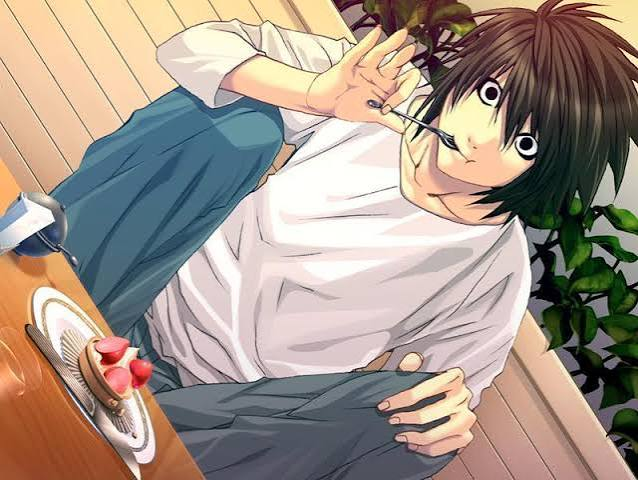

Meu Primeiro Post
Por: Vitor Hugo
Boas vindas ao meu novo blog! Aqui vou compartilhar dicas de programação e curiosidades da área de tecnologia.
Vou compartilhar conhecimentos sobre tecnologia e programação.
Por: Vitor Hugo
Boas vindas ao meu novo blog! Aqui vou compartilhar dicas de programação e curiosidades da área de tecnologia.

Por: Vitor Hugo
Este é o meu segundo post no blog! Estou praticando HTML, CSS e JavaScript para criar páginas cada vez melhores.

Por: Vitor Hugo
Você sabia que a tecnologia base do Wi-Fi foi criada pela atriz Hedy Lamarr durante a Segunda Guerra Mundial? Ela inventou um sistema de transmissão de dados que hoje permite nos conectarmos à internet sem fios!
Por: Vitor Hugo
O e-mail veio antes da internet: Em 1965, o sistema Mailbox permitia enviar mensagens entre usuários que compartilhavam o mesmo computador no MIT. A Arpanet, precursora da internet, só surgiria em 1969.
Por: Vitor Hugo
O mascote do Firefox não é uma raposa: O animal da logo é um panda-vermelho, cuja tradução em inglês também é "firefox".
Por: Vitor Hugo
A primeira programadora do mundo foi uma mulher: No século XIX, Ada Lovelace escreveu o primeiro algoritmo para ser processado por uma máquina (a Máquina Analítica de Charles Babbage).
Por: Vitor Hugo
O termo "SPAM" veio de uma piada com carne: O nome foi inspirado em um quadro de humor do grupo Monty Python, no qual a palavra "Spam" (uma marca de carne enlatada) era repetida exaustivamente.